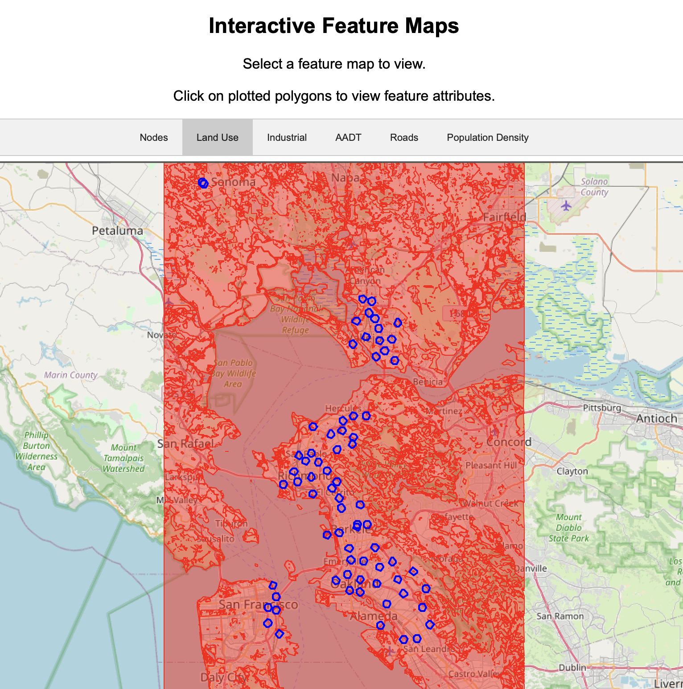

Welcome to the bayareaco2 Explore page. This interactive page is designed to help visualize the data and results associated with the bayareaco2 prediction models. The Feature Explorer demonstrates the feature data used to train the models, as well as the BEACO2N sensor locations. The Results Explorer gives a spatial representation of model performance. You can explore performance metrics for different models and for individual nodes. The data plotted on these maps is meant to be interacted with, so feel free to click and scroll around! Some feature maps have been optimized for the webpage interface. Select an Explore page below to get started:
